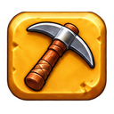
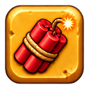
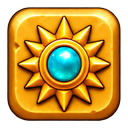

Cradle of Rome gem correspondence
All 16 regular Cradle of Rome 2 pieces have a Relic Rush counterpart by motif or wallet role. Silver coin, Ring, Scarab, Harp and Emerald now appear in the campaign.
Same motif means the object and purpose carry over. Role adapted pairs different objects by wallet tier or score function. Yields are per piece before any Rome multipliers.
Cradle of Rome 2
Expeditions use one coin-paying piece at a time. Helmets take over from sun coins after the Courtyard and the Temple introduces the 11-Coin Emerald. Shrimp take over the water bucket’s Food slot after the Fountain.
| Cradle of Rome 2 | Relic Rush | Campaign coverage |
|---|---|---|
LeafScore only · #01 |
LeafScore only · from expedition 3 |
Same motif Both use a leaf as a score piece. |
FlowerScore only · #02 |
FlowerScore only · from expedition 4 |
Same motif Both use a flower as a score piece. |
Silver coin3 Gold · #03 |
Silver coin3 Coins · expedition 3 |
Same motif A laurel-rimmed profile coin. It takes the sun coin’s slot for one early expedition. |
Gold coin5 Gold · #04 |
Sun coin4 Coins · opening |
Same motif One gold coin type with a sun emblem and a yield of 4. |
Water bucket3 Food · #05 |
Water bucket3 Food · from expedition 5 |
Same motif Same motif, yield and Well unlock. |
Lumber5 Supplies · #06 |
Timber2 Supplies · opening |
Same motif A bundle of three textured logs. Timber starts at 2 Supplies, and Cut blocks take the 5-Supplies role. |
Meat4 Food · #07 |
Ration jar4 Food · from expedition 10 |
Role adapted The same Food tier uses a jar. |
Stone7 Supplies · #08 |
Dressed stone3 Supplies · opening |
Same motif Dressed stone starts at 3. Carved quartz takes the 7-Supplies role later. |
Bread5 Food · #09 |
Grain bundle5 Food · from expedition 17 |
Role adapted The same Food tier uses a grain bundle. |
Shrimp6 Food · #10 |
Shrimp6 Food · from expedition 27 |
Same motif The Jade Fountain introduces shrimp in the bucket’s slot, with twice the Food yield. |
Helmet6 Gold · #11 |
Helmet6 Coins · expeditions 14–17 |
Same motif A crested helmet from the Sunstone Courtyard at the 6-Coin tier. |
Ring7 Gold · #12 |
Ring7 Coins · expeditions 18–20 |
Same motif A gold ring with a dark-green inset. It takes over the Courtyard’s coin slot at 7 Coins. |
Scarab8 Gold · #13 |
Scarab8 Coins · expeditions 21–24 |
Same motif A bronze scarab with a green inset. The same currency tier pays 8 Coins. |
Sandal9 Gold · #14 |
Sandal9 Coins · expeditions 25–27 |
Same motif A winged leather sandal. It takes the 9-Coin tier. |
Harp10 Gold · #15 |
Harp10 Coins · from expedition 28 |
Same motif A miniature gold lyre with strings and a turquoise inset. It pays 10 Coins. |
Emerald / Amethyst11 Gold · #16 |
Emerald11 Coins · expedition 30 |
Same motif The Windows tutorial says Emerald. Awem’s guide says Amethyst. The green emerald is the Temple’s top-paying piece. |
No gaps in the regular Cradle of Rome 2 pieces.
Cradle of Rome
Original desktop resource names from GameHouse, joined to tile IDs and artwork in Android beta 0.9.0. The three score pieces come from the beta. Its original art differs from the sequel in several slots.
| Cradle of Rome | Relic Rush | Campaign coverage |
|---|---|---|
LeafScore only · #01 |
LeafScore only · from expedition 3 |
Same motif Both use a leaf as a score piece. |
LadybugScore only · #02 |
FlowerScore only · from expedition 4 |
Role adapted The beta field file calls it Flower. The sprite is a ladybug. |
Silver coin3 Gold · #03 |
Silver coin3 Coins · expedition 3 |
Same motif A laurel-rimmed profile coin. |
Gold coin5 Gold · #04 |
Sun coin4 Coins · opening |
Same motif One gold coin type with a sun emblem and a yield of 4. |
Meat3 Food · #05 |
Water bucket3 Food · from expedition 5 |
Role adapted The same Food tier uses a water bucket. The beta also has WATER BUCKET as its internal label for the meat sprite. |
Lumber5 Supplies · #06 |
Timber2 Supplies · opening |
Same motif A bundle of three textured logs. Timber starts at 2 Supplies, and Cut blocks take the 5-Supplies role. |
Flour4 Food · #07 |
Ration jar4 Food · from expedition 10 |
Role adapted The same Food tier uses a jar. |
Stone7 Supplies · #08 |
Dressed stone3 Supplies · opening |
Same motif Dressed stone starts at 3. Carved quartz takes the 7-Supplies role later. |
Barrel5 Food · #09 |
Grain bundle5 Food · from expedition 17 |
Role adapted The same Food tier uses a grain bundle. |
Watermelon6 Food · #10 |
Shrimp6 Food · from expedition 27 |
Role adapted The beta tutorial calls this tile Vegetables. Relic Rush uses the sequel’s shrimp for the same Food tier. |
Fish7 Food · #11 |
No campaign piece | Gap Relic Rush has no 7-Food tier. |
Ring6 Gold · #12 |
Ring7 Coins · expeditions 18–20 |
Same motif Both use a gold ring with a coloured inset. Relic Rush pays 7 Coins. |
Pearl7 Gold · #13 |
Ring7 Coins · expeditions 18–20 |
Role adapted The same currency tier uses a ring. |
Brooch10 Gold · #14 |
Harp10 Coins · from expedition 28 |
Role adapted The same currency tier uses a harp. |
Goblet9 Gold · #15 |
Sandal9 Coins · expeditions 25–27 |
Role adapted The same currency tier uses a sandal. |
Diamond8 Gold · #16 |
Scarab8 Coins · expeditions 21–24 |
Role adapted The same currency tier uses a scarab. |
VaseScore only · #17 |
No campaign piece | Gap Named SKULL-vase in the field file. Relic Rush’s amphora is in the atlas for previews and fallback art. |
Other Relic Rush pieces
- Red berries1 Food · opening
An opening Food piece. The preview uses Rome 2’s Flower sprite here.
- Green apple1 Food · opening
An opening Food piece. The Emerald is a separate late-game treasure.
- Cut blocks5 Supplies · from expedition 8
Upgrades the stone slot and matches Rome’s Lumber yield. The preview uses Rome 2’s Stone sprite.
- Carved quartz7 Supplies · from expedition 20
Upgrades Cut blocks to Rome’s 7-Supplies Stone tier.
Story pieces and the legacy amphora
These nine campaign pieces occupy a colour slot and serve story recovery. Camp timber on expedition 1 is the ordinary Timber chip.
- Lamp lensExpedition 2
- Relay cableExpedition 3
- Tide chartExpedition 4
- Trail arrowExpedition 5–6
- Tool rollExpedition 7
- Relay pliersExpedition 8
- Supply satchelExpedition 9
- Shutter gearExpedition 10
- Folded noteExpedition 13
The atlas also contains an Amphora for preview and fallback art. The authored campaign palettes use a story piece, a score piece, or an omitted slot in its place.
Rome 2 preview art aliases
The --rome-reference-art option assigns original Windows crops for side-by-side testing. The aliases can differ from the live economic role.
The coin, timber, water bucket, shrimp and seven Roman finds use their corresponding Windows originals. The older comparison aliases pair Red berries with Flower (#02), Ration jar with Bread (#09), and both Dressed stone and Cut blocks with Stone (#08).
Bonuses and special pieces
Rome has eight matchable tool chargers. Relic Rush gives the player charges at the start of eligible expeditions.
| Cradle of Rome 2 | Relic Rush | Campaign coverage |
|---|---|---|
HammerRome 1 desktop · Hammer |
 PickaxeCampaign tool |
Single-cell hit. Two uses from expedition 1. |
BombRome 1 desktop · Bomb |
 DynamiteCampaign tool |
Hits the target and adjacent hexes. Two uses from expedition 2 after the Camp. |
FireballRome 1 desktop · Shield |
No campaign tool | The campaign has no line-clearing tool. |
HourglassRome 1 desktop · Hour-Glass |
No campaign tool | The campaign uses a move limit. |
Lightning BoltRome 1 desktop · Lightning |
No campaign tool | The campaign has no random-target tool. |
Super BombRome 1 desktop · Plus-Sign |
No campaign tool | The two Rome bonuses have different effects. Relic Rush has no separate counterpart. |
MixerRome 1 desktop · Orb |
No campaign tool | The campaign has no player-operated shuffle tool. |
StarRome 1 desktop · Star |
 SunburstCampaign tool |
Hits every piece of the chosen kind. Two uses from expedition 24 after the Observatory. |
Rome 2’s Skull adds marble tablets when matched. Its Super Arrow clears surrounding tiles when moved. Both are outside the regular-piece count. The campaign has no direct counterpart for either. Relic Rush’s match-created specials are available in reference boards.